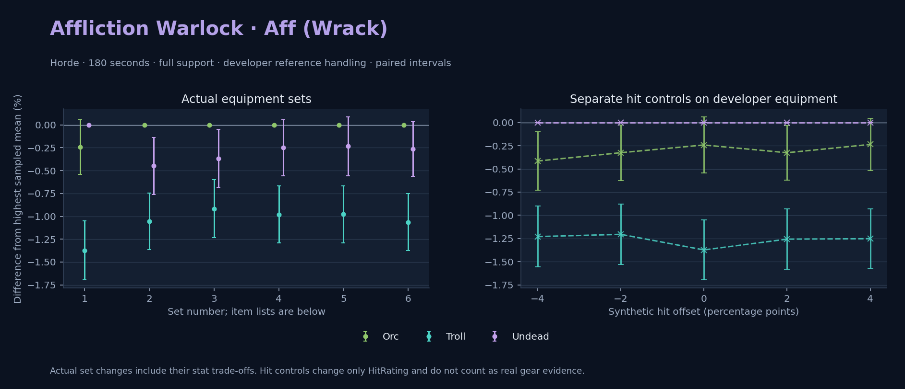

Horde · Orc / Troll / Undead

Pets / guardians: Imp, Voidwalker, Succubus, Felhunter · 55.7 DPS (10.4% of total). Reference: Orc, developer equipment, 180 seconds and full support. Pet choices remain those of the developer build.
WoWSims developer · Pre-raid (baseline fallback)
Unimplemented item effects: [{"id": 14153, "name": "Robe of the Void", "effects": ["Heal your pet for 600."]}]
Unimplemented enchant or active set effects: [{"id": 183, "pieces": 4, "effects": ["When struck in combat has a 2% chance of causing the attacker to flee in terror for 2s. Can only occur once every 60 sec."]}]
180 seconds, full support and original developer references. Hit below is generic sheet melee / spell hit; school and talent bonuses can be attached directly to spells.
| Race | DPS | Gap and interval | Generic hit | Replay |
|---|---|---|---|---|
| Undead | 537.48 | +0.000% ± 0.000 | 7.0% / 7.0% | Native input · Website JSON |
| Orc | 536.18 | -0.243% ± 0.301 | 7.0% / 7.0% | Native input · Website JSON |
| Troll | 530.10 | -1.373% ± 0.321 | 7.0% / 7.0% | Native input · Website JSON |
| Slot | Item | ID | Enchant |
|---|---|---|---|
| Head | Dreadmist Mask | 16698 | |
| Neck | Beads of Ogre Mojo | 22149 | |
| Shoulder | Dreadmist Mantle | 16701 | |
| Back | Arcanoweave Cloak | 272411 | |
| Chest | Robe of the Void | 14153 | |
| Wrist | Dreadmist Bracers | 16703 | |
| Hands | Dreadmist Wraps | 16705 | |
| Waist | Dreadmist Belt | 16702 | |
| Legs | Dreadmist Leggings | 16699 | |
| Feet | Dreadmist Sandals | 16704 | |
| Ring 1 | Jereman's Bauble | 275738 | |
| Ring 2 | Advisor's Ring | 19518 | |
| Trinket 1 | Weakness Analyzer | 272438 | |
| Trinket 2 | Jewel of the Guard Captain | 270225 | |
| Main hand | Darkspear Insurgent's Spellblade | 272083 | |
| Off hand | Truesilver Conduit | 249455 | |
| Ranged / relic | Lunar Wand | 15283 |
Published ranked alternatives · Published pre-raid
Recorded source replacements: [{"slot": "feet", "from": 11822, "to": 275606, "publishedAlternativeRank": 1, "publishedEpDelta": -1.3, "reason": "First published alternative compatible with the current WoWSims database, class, faction and occupied slots."}]
180 seconds, full support and original developer references. Hit below is generic sheet melee / spell hit; school and talent bonuses can be attached directly to spells.
| Race | DPS | Gap and interval | Generic hit | Replay |
|---|---|---|---|---|
| Orc | 625.94 | +0.000% ± 0.000 | 7.7% / 7.7% | Native input · Website JSON |
| Undead | 623.12 | -0.449% ± 0.312 | 7.7% / 7.7% | Native input · Website JSON |
| Troll | 619.33 | -1.055% ± 0.311 | 7.7% / 7.7% | Native input · Website JSON |
| Slot | Item | ID | Enchant |
|---|---|---|---|
| Head | Felcloth Hood | 14111 | Arcanum of Focus |
| Neck | Archlight Talisman | 15856 | Enchant Necklace - Spell Power |
| Shoulder | Mantle of the Timbermaw | 19050 | |
| Back | Arcanoweave Cloak | 272411 | |
| Chest | Robe of Winter Night | 14136 | Mystic Rugged Armor Kit |
| Wrist | Runecloth Cuffs | 254123 | Enchant Bracer - Greater Spellpower |
| Hands | Gloves of Spell Mastery | 14146 | Mystic Rugged Armor Kit |
| Waist | Belt of the Archmage | 18405 | |
| Legs | Ghostweave Pants | 14144 | Arcanum of Focus |
| Feet | Venomspew Footpads | 275606 | Mystic Rugged Armor Kit |
| Ring 1 | Maiden's Circle | 13001 | |
| Ring 2 | Maiden's Circle | 13001 | |
| Trinket 1 | Weakness Analyzer | 272438 | |
| Trinket 2 | Rune of the Guard Captain | 19120 | |
| Main hand | Sageblade | 22383 | |
| Off hand | Spirit of Aquementas | 11904 | Enchant Off-Hand - Superior Intellect |
| Ranged / relic | Greater Eternal Wand | 249237 |
Published one-slot hit alternative · Published pre-raid
One source-listed alternative; at least 80% of the source slot score retained. Reported hit selects the contrast; only native stats determine simulation outcomes. This is an experimental combination, not an endorsed best set.
Recorded source replacements: [{"slot": "feet", "from": 11822, "to": 275606, "publishedAlternativeRank": 1, "publishedEpDelta": -1.3, "reason": "First published alternative compatible with the current WoWSims database, class, faction and occupied slots."}]
180 seconds, full support and original developer references. Hit below is generic sheet melee / spell hit; school and talent bonuses can be attached directly to spells.
| Race | DPS | Gap and interval | Generic hit | Replay |
|---|---|---|---|---|
| Orc | 625.30 | +0.000% ± 0.000 | 7.0% / 7.0% | Native input · Website JSON |
| Undead | 623.00 | -0.367% ± 0.318 | 7.0% / 7.0% | Native input · Website JSON |
| Troll | 619.57 | -0.916% ± 0.317 | 7.0% / 7.0% | Native input · Website JSON |
| Slot | Item | ID | Enchant |
|---|---|---|---|
| Head | Felcloth Hood | 14111 | Arcanum of Focus |
| Neck | Archlight Talisman | 15856 | Enchant Necklace - Spell Power |
| Shoulder | Mantle of the Timbermaw | 19050 | |
| Back | Arcanoweave Cloak | 272411 | |
| Chest | Robe of Winter Night | 14136 | Mystic Rugged Armor Kit |
| Wrist | Runecloth Cuffs | 254123 | Enchant Bracer - Greater Spellpower |
| Hands | Gloves of Spell Mastery | 14146 | Mystic Rugged Armor Kit |
| Waist | Belt of the Archmage | 18405 | |
| Legs | Ghostweave Pants | 14144 | Arcanum of Focus |
| Feet | Venomspew Footpads | 275606 | Mystic Rugged Armor Kit |
| Ring 1 | Maiden's Circle | 13001 | |
| Ring 2 | Maiden's Circle | 13001 | |
| Trinket 1 | Weakness Analyzer | 272438 | |
| Trinket 2 | Uther's Strength | 11302 | |
| Main hand | Sageblade | 22383 | |
| Off hand | Spirit of Aquementas | 11904 | Enchant Off-Hand - Superior Intellect |
| Ranged / relic | Greater Eternal Wand | 249237 |
Published one-slot hit alternative · Published pre-raid
One source-listed alternative; at least 80% of the source slot score retained. Reported hit selects the contrast; only native stats determine simulation outcomes. This is an experimental combination, not an endorsed best set.
Recorded source replacements: [{"slot": "feet", "from": 11822, "to": 275606, "publishedAlternativeRank": 1, "publishedEpDelta": -1.3, "reason": "First published alternative compatible with the current WoWSims database, class, faction and occupied slots."}]
180 seconds, full support and original developer references. Hit below is generic sheet melee / spell hit; school and talent bonuses can be attached directly to spells.
| Race | DPS | Gap and interval | Generic hit | Replay |
|---|---|---|---|---|
| Orc | 624.46 | +0.000% ± 0.000 | 8.7% / 8.7% | Native input · Website JSON |
| Undead | 622.91 | -0.248% ± 0.306 | 8.7% / 8.7% | Native input · Website JSON |
| Troll | 618.34 | -0.980% ± 0.313 | 8.7% / 8.7% | Native input · Website JSON |
| Slot | Item | ID | Enchant |
|---|---|---|---|
| Head | Felcloth Hood | 14111 | Arcanum of Focus |
| Neck | Archlight Talisman | 15856 | Enchant Necklace - Spell Power |
| Shoulder | Mantle of the Timbermaw | 19050 | |
| Back | Arcanoweave Cloak | 272411 | |
| Chest | Robe of Winter Night | 14136 | Mystic Rugged Armor Kit |
| Wrist | Runecloth Cuffs | 254123 | Enchant Bracer - Greater Spellpower |
| Hands | Gloves of Spell Mastery | 14146 | Mystic Rugged Armor Kit |
| Waist | Belt of the Archmage | 18405 | |
| Legs | Ghostweave Pants | 14144 | Arcanum of Focus |
| Feet | Venomspew Footpads | 275606 | Mystic Rugged Armor Kit |
| Ring 1 | Blessed Band of Light | 272407 | |
| Ring 2 | Maiden's Circle | 13001 | |
| Trinket 1 | Weakness Analyzer | 272438 | |
| Trinket 2 | Rune of the Guard Captain | 19120 | |
| Main hand | Sageblade | 22383 | |
| Off hand | Spirit of Aquementas | 11904 | Enchant Off-Hand - Superior Intellect |
| Ranged / relic | Greater Eternal Wand | 249237 |
Published ranked alternatives · Published pre-raid
Recorded source replacements: [{"slot": "shoulder", "from": 227808, "to": 19050, "publishedAlternativeRank": 1, "publishedEpDelta": -10.8, "reason": "First published alternative compatible with the current WoWSims database, class, faction and occupied slots."}, {"slot": "waist", "from": 228190, "to": 18405, "publishedAlternativeRank": 1, "publishedEpDelta": -6.9, "reason": "First published alternative compatible with the current WoWSims database, class, faction and occupied slots."}, {"slot": "feet", "from": 11822, "to": 275606, "publishedAlternativeRank": 1, "publishedEpDelta": -1.3, "reason": "First published alternative compatible with the current WoWSims database, class, faction and occupied slots."}]
Unimplemented item effects: [{"id": 14153, "name": "Robe of the Void", "effects": ["Heal your pet for 600."]}]
180 seconds, full support and original developer references. Hit below is generic sheet melee / spell hit; school and talent bonuses can be attached directly to spells.
| Race | DPS | Gap and interval | Generic hit | Replay |
|---|---|---|---|---|
| Orc | 633.76 | +0.000% ± 0.000 | 7.9% / 7.9% | Native input · Website JSON |
| Undead | 632.27 | -0.235% ± 0.320 | 7.9% / 7.9% | Native input · Website JSON |
| Troll | 627.56 | -0.978% ± 0.311 | 7.9% / 7.9% | Native input · Website JSON |
| Slot | Item | ID | Enchant |
|---|---|---|---|
| Head | Felcloth Hood | 14111 | Arcanum of Focus |
| Neck | Archlight Talisman | 15856 | Enchant Necklace - Spell Power |
| Shoulder | Mantle of the Timbermaw | 19050 | |
| Back | Arcanoweave Cloak | 272411 | |
| Chest | Robe of the Void | 14153 | Mystic Rugged Armor Kit |
| Wrist | Netherpearl Cuffs | 254067 | Enchant Bracer - Greater Spellpower |
| Hands | Gloves of Spell Mastery | 14146 | Mystic Rugged Armor Kit |
| Waist | Belt of the Archmage | 18405 | |
| Legs | Ghostweave Pants | 14144 | Arcanum of Focus |
| Feet | Venomspew Footpads | 275606 | Mystic Rugged Armor Kit |
| Ring 1 | Maiden's Circle | 13001 | |
| Ring 2 | Maiden's Circle | 13001 | |
| Trinket 1 | Weakness Analyzer | 272438 | |
| Trinket 2 | Frozen Heart of the Mountain | 249469 | |
| Main hand | Sageblade | 22383 | |
| Off hand | Spirit of Aquementas | 11904 | Enchant Off-Hand - Superior Intellect |
| Ranged / relic | Brilliant Wand | 249385 |
Published one-slot hit alternative · Published pre-raid
One source-listed alternative; at least 80% of the source slot score retained. Reported hit selects the contrast; only native stats determine simulation outcomes. This is an experimental combination, not an endorsed best set.
Recorded source replacements: [{"slot": "shoulder", "from": 227808, "to": 19050, "publishedAlternativeRank": 1, "publishedEpDelta": -10.8, "reason": "First published alternative compatible with the current WoWSims database, class, faction and occupied slots."}, {"slot": "waist", "from": 228190, "to": 18405, "publishedAlternativeRank": 1, "publishedEpDelta": -6.9, "reason": "First published alternative compatible with the current WoWSims database, class, faction and occupied slots."}, {"slot": "feet", "from": 11822, "to": 275606, "publishedAlternativeRank": 1, "publishedEpDelta": -1.3, "reason": "First published alternative compatible with the current WoWSims database, class, faction and occupied slots."}]
Unimplemented item effects: [{"id": 14153, "name": "Robe of the Void", "effects": ["Heal your pet for 600."]}]
180 seconds, full support and original developer references. Hit below is generic sheet melee / spell hit; school and talent bonuses can be attached directly to spells.
| Race | DPS | Gap and interval | Generic hit | Replay |
|---|---|---|---|---|
| Orc | 634.14 | +0.000% ± 0.000 | 8.9% / 8.9% | Native input · Website JSON |
| Undead | 632.48 | -0.263% ± 0.299 | 8.9% / 8.9% | Native input · Website JSON |
| Troll | 627.40 | -1.064% ± 0.310 | 8.9% / 8.9% | Native input · Website JSON |
| Slot | Item | ID | Enchant |
|---|---|---|---|
| Head | Felcloth Hood | 14111 | Arcanum of Focus |
| Neck | Archlight Talisman | 15856 | Enchant Necklace - Spell Power |
| Shoulder | Mantle of the Timbermaw | 19050 | |
| Back | Arcanoweave Cloak | 272411 | |
| Chest | Robe of the Void | 14153 | Mystic Rugged Armor Kit |
| Wrist | Netherpearl Cuffs | 254067 | Enchant Bracer - Greater Spellpower |
| Hands | Gloves of Spell Mastery | 14146 | Mystic Rugged Armor Kit |
| Waist | Belt of the Archmage | 18405 | |
| Legs | Ghostweave Pants | 14144 | Arcanum of Focus |
| Feet | Venomspew Footpads | 275606 | Mystic Rugged Armor Kit |
| Ring 1 | Blessed Band of Light | 272407 | |
| Ring 2 | Maiden's Circle | 13001 | |
| Trinket 1 | Weakness Analyzer | 272438 | |
| Trinket 2 | Frozen Heart of the Mountain | 249469 | |
| Main hand | Sageblade | 22383 | |
| Off hand | Spirit of Aquementas | 11904 | Enchant Off-Hand - Superior Intellect |
| Ranged / relic | Brilliant Wand | 249385 |
The same declared pool is available to every race. Each race keeps its best validation-sample set with its screening-selected racial policy. Separate samples confirm that choice, with fresh precision samples near the practical-loss boundary. Gaps use the highest sampled mean under that same duration, support and reference treatment as their reference. A zero reference gap does not certify a race; the main matrix also allows uncertainty in the leader.
| Pool | Seconds | Support | References | Race | DPS | Gap and interval | Racial policies / mana | Selected set | Generic hit: melee / spell | Replay |
|---|---|---|---|---|---|---|---|---|---|---|
| published-pre-raid | 60 | full | developer | Orc | 698.89 | +0.000% ± 0.00020,000 iterations | developer / developer / developerMana waits 1.6s | published-warlock-affliction-horde-3b9cbd8b7c806510 | 7.9% / 7.9% | Input · Result · Stats |
| published-pre-raid | 60 | full | developer | Troll | 694.43 | -0.638% ± 0.10620,000 iterations | oncd / developer / developerMana waits 1.7s | published-warlock-affliction-horde-3b9cbd8b7c806510 | 7.9% / 7.9% | Input · Result · Stats |
| published-pre-raid | 60 | full | developer | Undead | 694.08 | -0.688% ± 0.09120,000 iterations | developer / developer / developerMana waits 1.6s | published-warlock-affliction-horde-3b9cbd8b7c806510 | 7.9% / 7.9% | Input · Result · Stats |
| published-pre-raid | 60 | full | explicit | Orc | 698.89 | +0.000% ± 0.00020,000 iterations | developer / developer / developerMana waits 1.6s | published-warlock-affliction-horde-3b9cbd8b7c806510 | 7.9% / 7.9% | Input · Result · Stats |
| published-pre-raid | 60 | full | explicit | Troll | 694.43 | -0.638% ± 0.10620,000 iterations | oncd / developer / developerMana waits 1.7s | published-warlock-affliction-horde-3b9cbd8b7c806510 | 7.9% / 7.9% | Input · Result · Stats |
| published-pre-raid | 60 | full | explicit | Undead | 694.08 | -0.688% ± 0.09120,000 iterations | developer / developer / developerMana waits 1.6s | published-warlock-affliction-horde-3b9cbd8b7c806510 | 7.9% / 7.9% | Input · Result · Stats |
| published-pre-raid | 60 | self | developer | Orc | 611.03 | +0.000% ± 0.00020,000 iterations | developer / developer / developerMana waits 5.7s | published-warlock-affliction-horde-3b9cbd8b7c806510 | 7.9% / 7.9% | Input · Result · Stats |
| published-pre-raid | 60 | self | developer | Troll | 607.66 | -0.552% ± 0.11620,000 iterations | oncd / developer / developerMana waits 5.8s | published-warlock-affliction-horde-3b9cbd8b7c806510 | 7.9% / 7.9% | Input · Result · Stats |
| published-pre-raid | 60 | self | developer | Undead | 605.08 | -0.974% ± 0.09720,000 iterations | developer / developer / developerMana waits 5.6s | published-warlock-affliction-horde-3b9cbd8b7c806510 | 7.9% / 7.9% | Input · Result · Stats |
| published-pre-raid | 60 | self | explicit | Orc | 611.03 | +0.000% ± 0.00020,000 iterations | developer / developer / developerMana waits 5.7s | published-warlock-affliction-horde-3b9cbd8b7c806510 | 7.9% / 7.9% | Input · Result · Stats |
| published-pre-raid | 60 | self | explicit | Troll | 607.66 | -0.552% ± 0.11620,000 iterations | oncd / developer / developerMana waits 5.8s | published-warlock-affliction-horde-3b9cbd8b7c806510 | 7.9% / 7.9% | Input · Result · Stats |
| published-pre-raid | 60 | self | explicit | Undead | 605.08 | -0.974% ± 0.09720,000 iterations | developer / developer / developerMana waits 5.6s | published-warlock-affliction-horde-3b9cbd8b7c806510 | 7.9% / 7.9% | Input · Result · Stats |
| published-pre-raid | 180 | full | developer | Orc | 632.52 | +0.000% ± 0.00020,000 iterations | developer / developer / developerMana waits 24.3s | published-warlock-affliction-horde-3b9cbd8b7c806510-higher-hit | 8.9% / 8.9% | Input · Result · Stats · Website JSON |
| published-pre-raid | 180 | full | developer | Undead | 630.96 | -0.246% ± 0.06720,000 iterations | developer / developer / developerMana waits 24.3s | published-warlock-affliction-horde-3b9cbd8b7c806510-higher-hit | 8.9% / 8.9% | Input · Result · Stats · Website JSON |
| published-pre-raid | 180 | full | developer | Troll | 625.84 | -1.055% ± 0.07120,000 iterations | developer / developer / developerMana waits 25.2s | published-warlock-affliction-horde-3b9cbd8b7c806510 | 7.9% / 7.9% | Input · Result · Stats · Website JSON |
| published-pre-raid | 180 | full | explicit | Orc | 632.52 | +0.000% ± 0.00020,000 iterations | developer / developer / developerMana waits 24.3s | published-warlock-affliction-horde-3b9cbd8b7c806510-higher-hit | 8.9% / 8.9% | Input · Result · Stats |
| published-pre-raid | 180 | full | explicit | Undead | 630.96 | -0.246% ± 0.06720,000 iterations | developer / developer / developerMana waits 24.3s | published-warlock-affliction-horde-3b9cbd8b7c806510-higher-hit | 8.9% / 8.9% | Input · Result · Stats |
| published-pre-raid | 180 | full | explicit | Troll | 625.84 | -1.055% ± 0.07120,000 iterations | developer / developer / developerMana waits 25.2s | published-warlock-affliction-horde-3b9cbd8b7c806510 | 7.9% / 7.9% | Input · Result · Stats |
| published-pre-raid | 180 | self | developer | Orc | 566.56 | +0.000% ± 0.00020,000 iterations | developer / developer / developerMana waits 26.4s | published-warlock-affliction-horde-3b9cbd8b7c806510 | 7.9% / 7.9% | Input · Result · Stats |
| published-pre-raid | 180 | self | developer | Undead | 563.99 | -0.453% ± 0.06420,000 iterations | developer / developer / developerMana waits 26.0s | published-warlock-affliction-horde-3b9cbd8b7c806510 | 7.9% / 7.9% | Input · Result · Stats |
| published-pre-raid | 180 | self | developer | Troll | 560.85 | -1.008% ± 0.06620,000 iterations | oncd / developer / developerMana waits 27.2s | published-warlock-affliction-horde-3b9cbd8b7c806510 | 7.9% / 7.9% | Input · Result · Stats |
| published-pre-raid | 180 | self | explicit | Orc | 566.56 | +0.000% ± 0.00020,000 iterations | developer / developer / developerMana waits 26.4s | published-warlock-affliction-horde-3b9cbd8b7c806510 | 7.9% / 7.9% | Input · Result · Stats |
| published-pre-raid | 180 | self | explicit | Undead | 563.99 | -0.453% ± 0.06420,000 iterations | developer / developer / developerMana waits 26.0s | published-warlock-affliction-horde-3b9cbd8b7c806510 | 7.9% / 7.9% | Input · Result · Stats |
| published-pre-raid | 180 | self | explicit | Troll | 560.85 | -1.008% ± 0.06620,000 iterations | oncd / developer / developerMana waits 27.2s | published-warlock-affliction-horde-3b9cbd8b7c806510 | 7.9% / 7.9% | Input · Result · Stats |
| published-pre-raid | 300 | full | developer | Orc | 627.55 | +0.000% ± 0.00020,000 iterations | developer / developer / developerMana waits 47.2s | published-warlock-affliction-horde-3b9cbd8b7c806510-higher-hit | 8.9% / 8.9% | Input · Result · Stats |
| published-pre-raid | 300 | full | developer | Undead | 626.55 | -0.159% ± 0.05420,000 iterations | developer / developer / developerMana waits 47.2s | published-warlock-affliction-horde-3b9cbd8b7c806510-higher-hit | 8.9% / 8.9% | Input · Result · Stats |
| published-pre-raid | 300 | full | developer | Troll | 621.96 | -0.890% ± 0.05620,000 iterations | developer / developer / developerMana waits 48.7s | published-warlock-affliction-horde-3b9cbd8b7c806510 | 7.9% / 7.9% | Input · Result · Stats |
| published-pre-raid | 300 | full | explicit | Orc | 627.55 | +0.000% ± 0.00020,000 iterations | developer / developer / developerMana waits 47.2s | published-warlock-affliction-horde-3b9cbd8b7c806510-higher-hit | 8.9% / 8.9% | Input · Result · Stats |
| published-pre-raid | 300 | full | explicit | Undead | 626.55 | -0.159% ± 0.05420,000 iterations | developer / developer / developerMana waits 47.2s | published-warlock-affliction-horde-3b9cbd8b7c806510-higher-hit | 8.9% / 8.9% | Input · Result · Stats |
| published-pre-raid | 300 | full | explicit | Troll | 621.96 | -0.890% ± 0.05620,000 iterations | developer / developer / developerMana waits 48.7s | published-warlock-affliction-horde-3b9cbd8b7c806510 | 7.9% / 7.9% | Input · Result · Stats |
| published-pre-raid | 300 | self | developer | Orc | 563.17 | +0.000% ± 0.00020,000 iterations | developer / developer / developerMana waits 47.8s | published-warlock-affliction-horde-3b9cbd8b7c806510 | 7.9% / 7.9% | Input · Result · Stats |
| published-pre-raid | 300 | self | developer | Undead | 561.25 | -0.341% ± 0.05120,000 iterations | developer / developer / developerMana waits 47.1s | published-warlock-affliction-horde-3b9cbd8b7c806510 | 7.9% / 7.9% | Input · Result · Stats |
| published-pre-raid | 300 | self | developer | Troll | 557.69 | -0.974% ± 0.05120,000 iterations | developer / developer / developerMana waits 49.5s | published-warlock-affliction-horde-3b9cbd8b7c806510 | 7.9% / 7.9% | Input · Result · Stats |
| published-pre-raid | 300 | self | explicit | Orc | 563.17 | +0.000% ± 0.00020,000 iterations | developer / developer / developerMana waits 47.8s | published-warlock-affliction-horde-3b9cbd8b7c806510 | 7.9% / 7.9% | Input · Result · Stats |
| published-pre-raid | 300 | self | explicit | Undead | 561.25 | -0.341% ± 0.05120,000 iterations | developer / developer / developerMana waits 47.1s | published-warlock-affliction-horde-3b9cbd8b7c806510 | 7.9% / 7.9% | Input · Result · Stats |
| published-pre-raid | 300 | self | explicit | Troll | 557.69 | -0.974% ± 0.05120,000 iterations | developer / developer / developerMana waits 49.5s | published-warlock-affliction-horde-3b9cbd8b7c806510 | 7.9% / 7.9% | Input · Result · Stats |
| developer-reference | 60 | full | developer | Orc | 587.32 | +0.000% ± 0.00020,000 iterations | developer / developer / developerMana waits 1.0s | developer | 7.0% / 7.0% | Input · Result · Stats |
| developer-reference | 60 | full | developer | Undead | 586.44 | -0.150% ± 0.08820,000 iterations | developer / developer / developerMana waits 1.0s | developer | 7.0% / 7.0% | Input · Result · Stats |
| developer-reference | 60 | full | developer | Troll | 584.18 | -0.535% ± 0.10320,000 iterations | oncd / developer / developerMana waits 1.2s | developer | 7.0% / 7.0% | Input · Result · Stats |
| developer-reference | 60 | full | explicit | Orc | 587.32 | +0.000% ± 0.00020,000 iterations | developer / developer / developerMana waits 1.0s | developer | 7.0% / 7.0% | Input · Result · Stats |
| developer-reference | 60 | full | explicit | Undead | 586.44 | -0.150% ± 0.08820,000 iterations | developer / developer / developerMana waits 1.0s | developer | 7.0% / 7.0% | Input · Result · Stats |
| developer-reference | 60 | full | explicit | Troll | 584.18 | -0.535% ± 0.10320,000 iterations | oncd / developer / developerMana waits 1.2s | developer | 7.0% / 7.0% | Input · Result · Stats |
| developer-reference | 60 | self | developer | Orc | 514.20 | +0.000% ± 0.00020,000 iterations | developer / developer / developerMana waits 4.8s | developer | 7.0% / 7.0% | Input · Result · Stats |
| developer-reference | 60 | self | developer | Undead | 511.83 | -0.461% ± 0.09820,000 iterations | developer / developer / developerMana waits 4.8s | developer | 7.0% / 7.0% | Input · Result · Stats |
| developer-reference | 60 | self | developer | Troll | 511.72 | -0.482% ± 0.11520,000 iterations | oncd / developer / developerMana waits 5.0s | developer | 7.0% / 7.0% | Input · Result · Stats |
| developer-reference | 60 | self | explicit | Orc | 514.20 | +0.000% ± 0.00020,000 iterations | developer / developer / developerMana waits 4.8s | developer | 7.0% / 7.0% | Input · Result · Stats |
| developer-reference | 60 | self | explicit | Undead | 511.83 | -0.461% ± 0.09820,000 iterations | developer / developer / developerMana waits 4.8s | developer | 7.0% / 7.0% | Input · Result · Stats |
| developer-reference | 60 | self | explicit | Troll | 511.72 | -0.482% ± 0.11520,000 iterations | oncd / developer / developerMana waits 5.0s | developer | 7.0% / 7.0% | Input · Result · Stats |
| developer-reference | 180 | full | developer | Undead | 535.56 | +0.000% ± 0.00020,000 iterations | developer / developer / developerMana waits 23.5s | developer | 7.0% / 7.0% | Input · Result · Stats · Website JSON |
| developer-reference | 180 | full | developer | Orc | 534.12 | -0.268% ± 0.06920,000 iterations | developer / developer / developerMana waits 23.6s | developer | 7.0% / 7.0% | Input · Result · Stats · Website JSON |
| developer-reference | 180 | full | developer | Troll | 528.83 | -1.256% ± 0.07220,000 iterations | oncd / developer / developerMana waits 24.3s | developer | 7.0% / 7.0% | Input · Result · Stats · Website JSON |
| developer-reference | 180 | full | explicit | Undead | 535.56 | +0.000% ± 0.00020,000 iterations | developer / developer / developerMana waits 23.5s | developer | 7.0% / 7.0% | Input · Result · Stats |
| developer-reference | 180 | full | explicit | Orc | 534.12 | -0.268% ± 0.06920,000 iterations | developer / developer / developerMana waits 23.6s | developer | 7.0% / 7.0% | Input · Result · Stats |
| developer-reference | 180 | full | explicit | Troll | 528.83 | -1.256% ± 0.07220,000 iterations | oncd / developer / developerMana waits 24.3s | developer | 7.0% / 7.0% | Input · Result · Stats |
| developer-reference | 180 | self | developer | Orc | 473.94 | +0.000% ± 0.00020,000 iterations | developer / developer / developerMana waits 28.6s | developer | 7.0% / 7.0% | Input · Result · Stats |
| developer-reference | 180 | self | developer | Undead | 473.79 | -0.031% ± 0.06720,000 iterations | developer / developer / developerMana waits 28.6s | developer | 7.0% / 7.0% | Input · Result · Stats |
| developer-reference | 180 | self | developer | Troll | 469.63 | -0.908% ± 0.07020,000 iterations | oncd / developer / developerMana waits 28.4s | developer | 7.0% / 7.0% | Input · Result · Stats |
| developer-reference | 180 | self | explicit | Orc | 473.94 | +0.000% ± 0.00020,000 iterations | developer / developer / developerMana waits 28.6s | developer | 7.0% / 7.0% | Input · Result · Stats |
| developer-reference | 180 | self | explicit | Undead | 473.79 | -0.031% ± 0.06720,000 iterations | developer / developer / developerMana waits 28.6s | developer | 7.0% / 7.0% | Input · Result · Stats |
| developer-reference | 180 | self | explicit | Troll | 469.63 | -0.908% ± 0.07020,000 iterations | oncd / developer / developerMana waits 28.4s | developer | 7.0% / 7.0% | Input · Result · Stats |
| developer-reference | 300 | full | developer | Undead | 531.73 | +0.000% ± 0.00020,000 iterations | developer / developer / developerMana waits 46.3s | developer | 7.0% / 7.0% | Input · Result · Stats |
| developer-reference | 300 | full | developer | Orc | 529.97 | -0.330% ± 0.05520,000 iterations | developer / developer / developerMana waits 46.3s | developer | 7.0% / 7.0% | Input · Result · Stats |
| developer-reference | 300 | full | developer | Troll | 524.88 | -1.289% ± 0.05720,000 iterations | developer / developer / developerMana waits 47.3s | developer | 7.0% / 7.0% | Input · Result · Stats |
| developer-reference | 300 | full | explicit | Undead | 531.73 | +0.000% ± 0.00020,000 iterations | developer / developer / developerMana waits 46.3s | developer | 7.0% / 7.0% | Input · Result · Stats |
| developer-reference | 300 | full | explicit | Orc | 529.97 | -0.330% ± 0.05520,000 iterations | developer / developer / developerMana waits 46.3s | developer | 7.0% / 7.0% | Input · Result · Stats |
| developer-reference | 300 | full | explicit | Troll | 524.88 | -1.289% ± 0.05720,000 iterations | developer / developer / developerMana waits 47.3s | developer | 7.0% / 7.0% | Input · Result · Stats |
| developer-reference | 300 | self | developer | Undead | 470.51 | +0.000% ± 0.00020,000 iterations | developer / developer / developerMana waits 52.2s | developer | 7.0% / 7.0% | Input · Result · Stats |
| developer-reference | 300 | self | developer | Orc | 469.92 | -0.126% ± 0.05520,000 iterations | developer / developer / developerMana waits 52.4s | developer | 7.0% / 7.0% | Input · Result · Stats |
| developer-reference | 300 | self | developer | Troll | 466.25 | -0.906% ± 0.05720,000 iterations | developer / developer / developerMana waits 52.0s | developer | 7.0% / 7.0% | Input · Result · Stats |
| developer-reference | 300 | self | explicit | Undead | 470.51 | +0.000% ± 0.00020,000 iterations | developer / developer / developerMana waits 52.2s | developer | 7.0% / 7.0% | Input · Result · Stats |
| developer-reference | 300 | self | explicit | Orc | 469.92 | -0.126% ± 0.05520,000 iterations | developer / developer / developerMana waits 52.4s | developer | 7.0% / 7.0% | Input · Result · Stats |
| developer-reference | 300 | self | explicit | Troll | 466.25 | -0.906% ± 0.05720,000 iterations | developer / developer / developerMana waits 52.0s | developer | 7.0% / 7.0% | Input · Result · Stats |
180 seconds, full support and the developer equipment anchor. These checks test creature sensitivity without a full gear search.
| Target | References | Race | DPS | Gap and interval | Replay |
|---|---|---|---|---|---|
| beast | developer | Troll | 553.96 | +0.000% ± 0.000 | Input · Result |
| beast | developer | Undead | 537.48 | -2.974% ± 0.317 | Input · Result |
| beast | developer | Orc | 536.18 | -3.210% ± 0.317 | Input · Result |
| beast | explicit | Troll | 553.96 | +0.000% ± 0.000 | Input · Result |
| beast | explicit | Undead | 537.48 | -2.974% ± 0.317 | Input · Result |
| beast | explicit | Orc | 536.18 | -3.210% ± 0.317 | Input · Result |
| elemental | developer | Undead | 537.48 | +0.000% ± 0.000 | Input · Result |
| elemental | developer | Orc | 536.18 | -0.243% ± 0.301 | Input · Result |
| elemental | developer | Troll | 530.10 | -1.373% ± 0.321 | Input · Result |
| elemental | explicit | Undead | 537.48 | +0.000% ± 0.000 | Input · Result |
| elemental | explicit | Orc | 536.18 | -0.243% ± 0.301 | Input · Result |
| elemental | explicit | Troll | 530.10 | -1.373% ± 0.321 | Input · Result |
Some equipment has unimplemented item effects; Some equipment has unimplemented enchant or set effects
These known-issue notes are source context. Runtime checks establish current cast coverage, including Mutilate. They do not prove every mechanic matches the game.